Initial Setup
At the very beginning, variables are declared to store the state of the gameanvas and remove it from the balls array if it is.
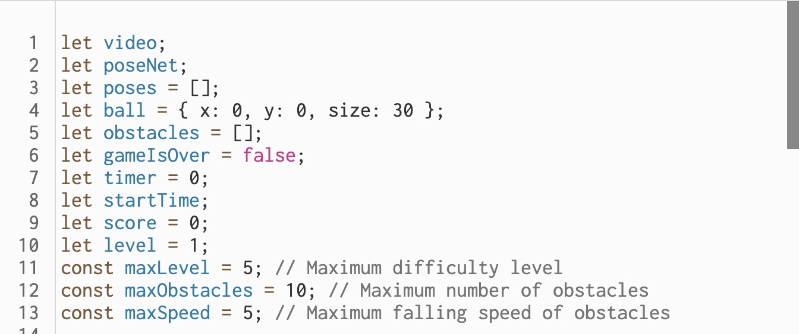I want to make an obstacle avoidance game that can interact with the human body. A computer camera is used to recognize a human face, then a movable ball is generated at the position of the nose, and the movement of the ball follows the position of the nose in the screen. Then, obstacles will fall randomly from the top of the canvas, and the player needs to move the ball to avoid the falling obstacles. The game ends when the ball hits an obstacle. During the game there is a timer to keep track of the time, and a difficulty system to adjust the number and speed of the falling balls.
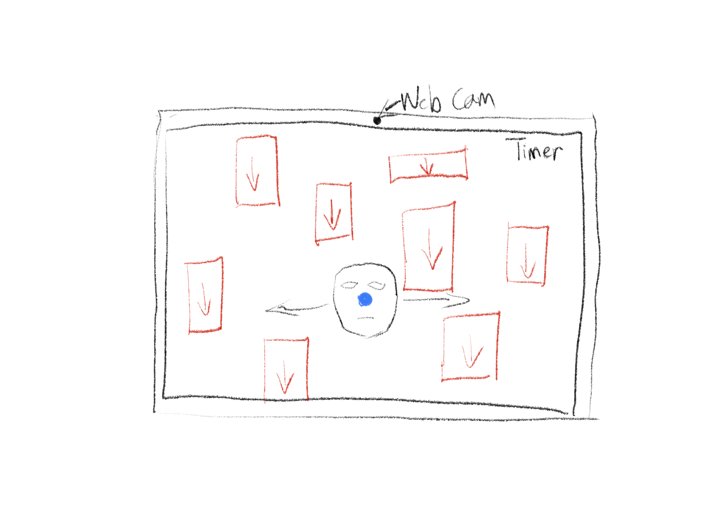At the very beginning, variables are declared to store the state of the gameanvas and remove it from the balls array if it is.
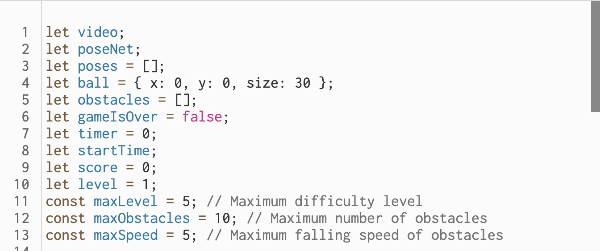Set up the canvas, start the video capture, initialize poseNet with a callback for when it's ready, and hide the video element. Conclude by calling resetGame to start the game with initial settings.
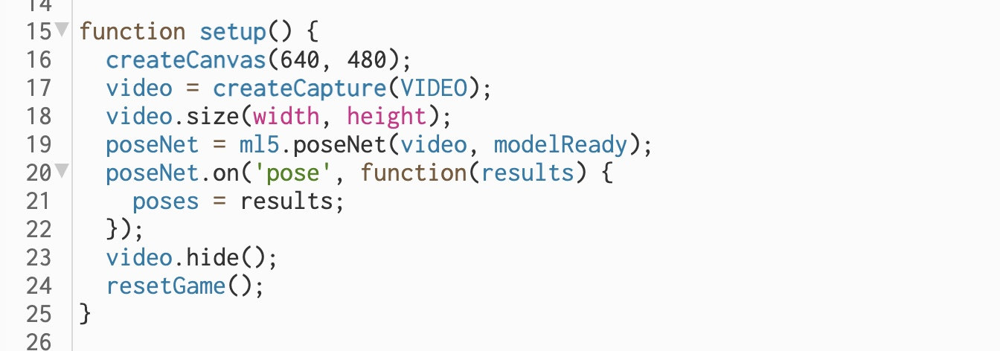Create resetGame function, which sets the game to its starting conditions. It resets the obstacles array, game over flag, timer, score, level, and starts the timer. It also displays the initial game instructions and creates the first set of obstacles.
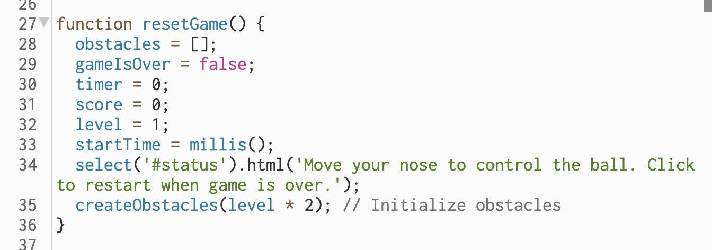Obstacle creation function generates a specified number of obstacles with random positions, sizes, and speeds, adding them to the obstacles array.
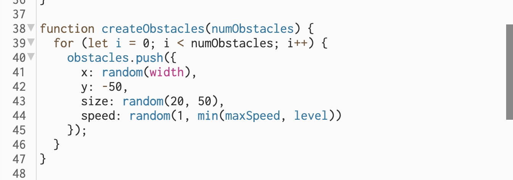Update the on-screen status when the PoseNet model is loaded and ready to use.
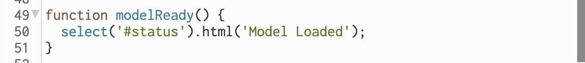Create draw function, which is called repeatedly by p5.js and handles the rendering of each frame of the game. It checks if the game is over and either updates and draws the game elements or handles the game over logic.
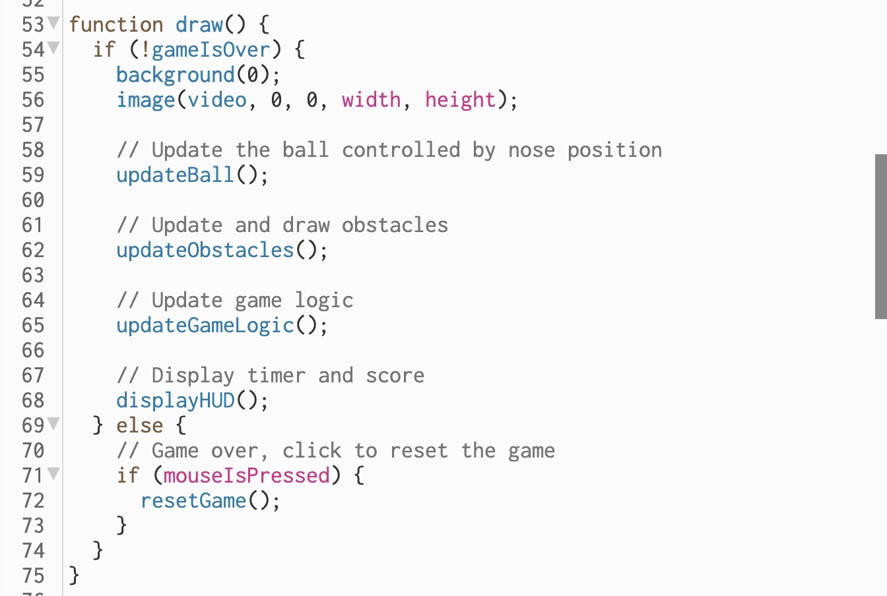Create ball update function. It updates the position of the ball according to the detected position of the player's nose using the pose data.
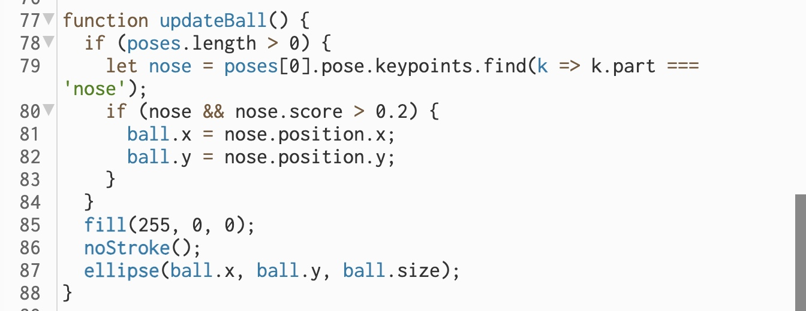Create obstacles update function to maintain the obstacles, updating their positions, checking for collisions, and increasing the score as they pass off the screen.
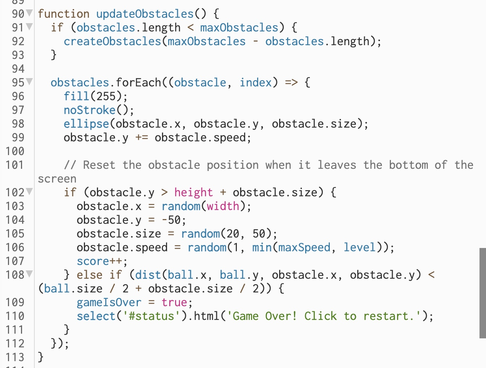This function handles the progression of the game through levels based on the elapsed time.
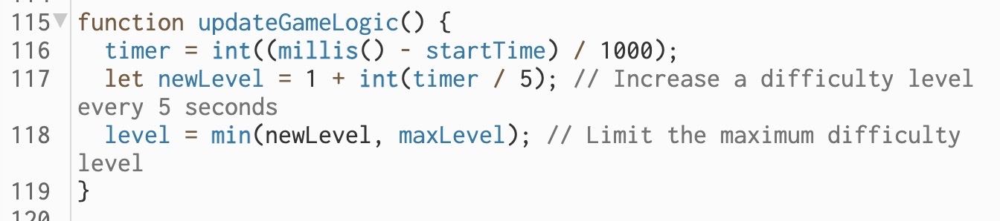Create HUD display function to draw the heads-up display, showing the score, time, and current level on the canvas.
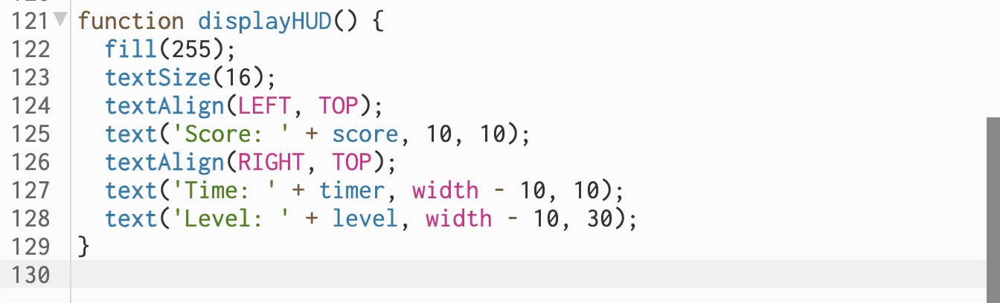